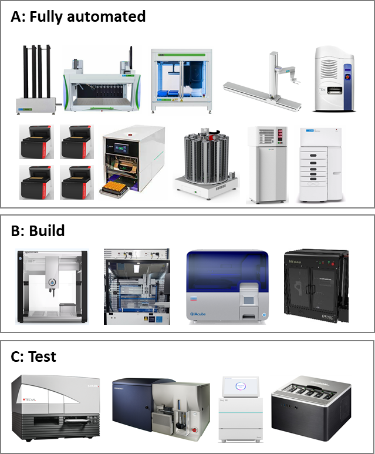

자동화 장비 정보 사이트
0.1 Welcome
- Biofoundry at KRIBB
- 바이오파운드리 장비리스트 및 사용법
- github site: https://github.com/haneul-2209/test
- website: https://haneul-2209.github.io/test
0.2 장비리스트
- 
| 장비명 | 제조사 | Unitprocess | 기능 | |
|---|---|---|---|---|
| Full automation | JANUS | Perkin Elmer (revvity) |
Liquid transfer | automated multiple dispenser system 8-channel pipettes: 1 - 1000 ul 5 ul volume: <2% CV various reservoirs 96 / 384 / 1536 well plate - PCA mix, PCR mix, Gibson mix, Yeast TF mix, Enzyme, broth, cell spotting |
| Full automation | Zephyr | Perkin Elmer (revvity) |
Liquid transfer PCR purification NGS preparation Transformation |
96-channel pipettes: 1-200 ul 1-5 ul volume: <5% CV, 5-200 ul: <2% CV 4-70 ℃ thermal heater and shaker 96 well/384 well plate - Magnetic plate for DNA purification with magnetic bead |
| Full automation | Echo525 | Beckman Coulter | Liquid transfer | Acoustic liquid dispenser Average 300 drops/sce, 25 nl drop volume, <8% CV 96 / 384 / 1536 well plate - primers & probes, substrate, direct dilution |
| Full automation | Trobot II | Analytik-jena | Thermocycling Incubation |
96 well block Silver block with gold coating Proposed sample volume: 5- 100 ul maximum heating: 5.0 ℃/s Average heating: 4.9 ℃/s - Enzyme reaction, Thermocycling |
| Full automation | 5400 Fragment analyzer | Agilent | Analysis | 96-capillary arrays Running time: 96 samples in 1 hours (spec. 2,400 samples in 24 hours ) High-resolution separation: 2% accuracy Broad assay portfolio - gDNA, NGS libraries, DNA fragments, total RNA, small RNA mRNA vaccines |
| Full automation | StoreX STX44 | LiCONiC | Storage | Automated storage for robotic integration Maximum 44 standard microplates (Included 2 stack) Temperature Control: 4℃ to 50℃ Loading Plate Time: under 6 seconds |
| Full automation | LPX220 | LiCONiC | Storage | Automated microplate hotel with 10 racks Deep Well Plates (Plate Height: 44 mm, 53 mm) Microliter plates (Plate Height: 17 mm, 22 mm, 23 mm, 27 mm) DiTi200 (Plate Height: 66 mm) DiTi1000 (Plate Height: 104 mm) |
| Full automation | PlateStak™ | Perkin Elmer (revvity) |
Storage | Automated plate stacker system |
| Full automation | IntelliXcap™ Tube Capper & Decapper | Azenta | sample | Ambient operating temperature: 5℃ to 40℃ Capping/decapping speed: 20-40 sec to decap or to recap a rack of tubes *External tube cartridge set up |
| Full automation | PFLEX | Perkin Elmer (revvity) |
Robot arm | |
| Automation | OT-2 | opentrons | Liquid transfer | Single and 8-Channel pipette (P20) Thermocycler Module Magnetic Module Open protocol 1.5 mL, 1.8 mL, 2. mL micro tube/8-strips 0.2 ml tubes/96 well plate |
| Automation | ATS | ABLE Labs with KRIBB | Transformation | Automated Transformation System 4-70 ℃ thermal heater and shaker 8-channel pipettes: 1~ 1000 uL |
| Automation | QIAcube | Qiagen | Sample prep | Automated DNA/RNA prep Various sample types (spin-column) QIAGEN spin Kit Blood & Tissue, DNA Mini, Fecal, RNA, Viral RNA Maximum 12 samples Applications - Sequencing/sequencing analysis, gene expression analysis, genotyping, proteomics, microbiome research |
| Automation | K62 picker | KBIOSYSTEMS | Colony picking | Benchtop Automated Colony Picking System Pick From: Bio-Assay Trays, 50 – 150 mm Culture Dishes, Omni Trays, 6 to 24 well growth plates Inoculate into: 96, 384, 1536 well plates, omni trays 16 pin picking head capable of over 1000 Colonies Per Hours |
| Analysis | Spark® | TECAN | Microplate reading | Multi detection microplate reader Absorbance, fluorescence, time resolved fluorescence, FRET, TR-FRET, luminescence, automated live cell imaging End-point, kinetic, spectral scanning, well-area scanning or equivalent Temperature control : RT+3 ℃ - 42 ℃ ELISA |
| Analysis | FACSAria III | BD | Cell sorting | Automated high speed cytometry system Maximum sample acquisition: 100,000 cells per second Optimum sorting rate: 20,000 – 50,000 cells/sec (MAX. 70,000 cell/sec) Lasers : 488 nm blue laser (20 mW), 633 nm red laser (18 mW) Detector array : Octagon (FITC, PE, PE-Texas Red, PerCP, PE-Cy7), Trigon (APC, APC-Cy7) Nozzles : 70, 85 micron Sort collection devices : Two-way sorting (15 mL tubes), Four-way sorting (12x75 mm tubes), Plate sorting |
| Analysis | iSeq 100 | illumina | Short read sequence analysis | Short read: max output 1.2 Gb (19 hours) Reads per run: 4 million Max read length: 2 x 150 bp |
| Analysis | GridION | Oxford NANOPORE | Long read sequence analysis | Run multiple DNA/RNA sequencing experiments: 1 -5 flow cells Long read: up to 250 Gb (72 hours at 420 bases/sec) |